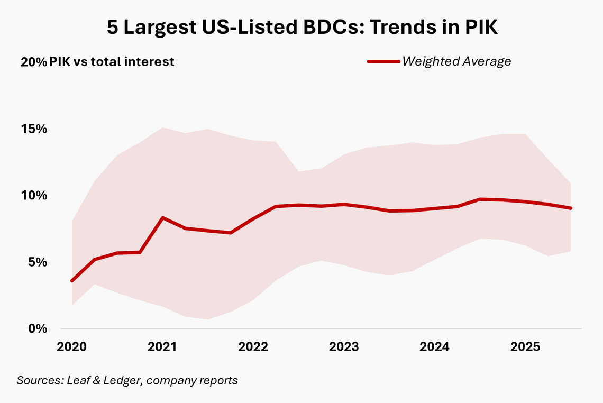
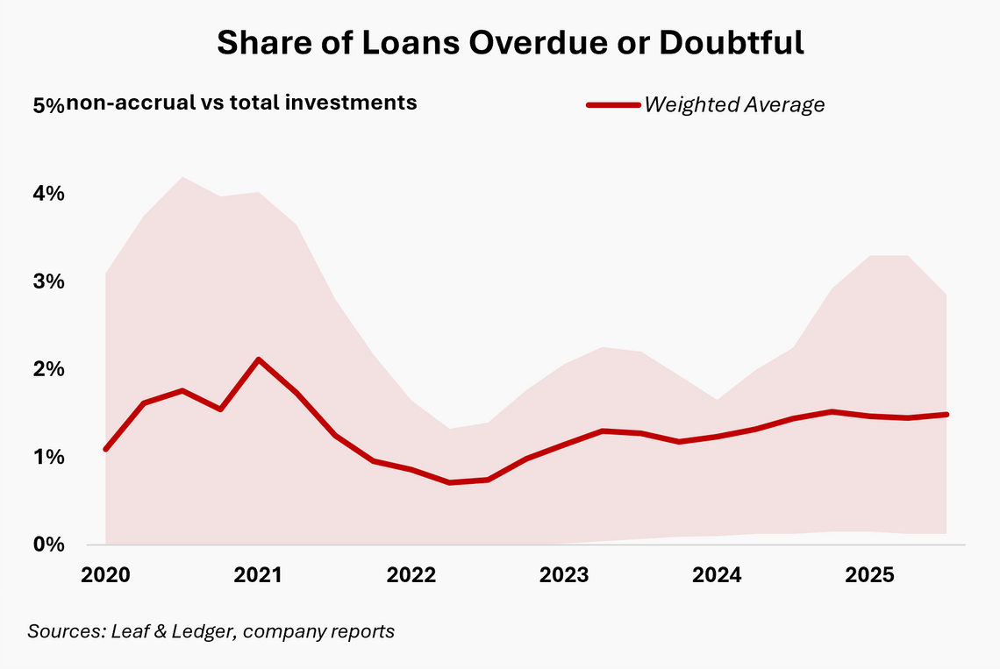
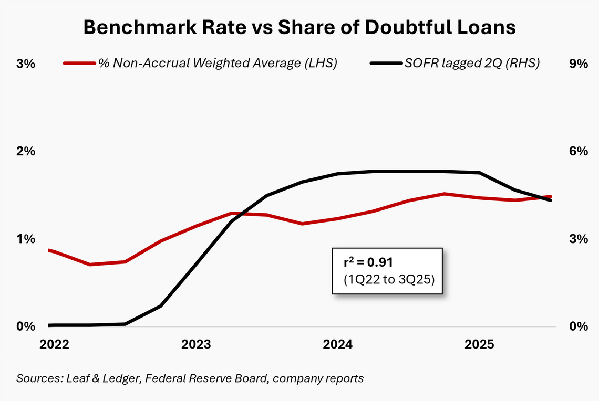

The Visible Strain: A Gentle Squeeze in Private Credit
We previously examined commercial real estate through the public reporting window of CMBS. It is now time to apply that same logic to the broader private credit market. While much of this asset class operates behind the veil of private funds and insurance balance sheets, Business Development Companies (BDCs) provide a similar regulated transparency.
The name "Business Development Company" is one of modern finance’s great euphemisms. While it may suggest a government agency designed to help small businesses, in reality it is a specific US creation offering a tax-advantaged vehicle that allows retail investors to act as private lenders. While many BDCs are private or non-traded, our focus here is on the largest publicly listed BDCs. Because they trade on major exchanges, they offer a rare combination of quarterly reporting discipline and market pricing. By examining five years of quarterly disclosures from the sector’s largest players, we can track the specific transmission mechanism of higher interest rates [1].
The data reveals a distinct pattern. We are not witnessing a sudden crash. We are seeing a slow, grinding deterioration in cash flow coverage that is forcing lenders to accept paper promises instead of cash.
The Drift Away from Cash
The first signal of distress is rarely a default. It is the quiet substitution of cash payments for more credit. Payment-in-kind (PIK) income occurs when a borrower cannot meet their interest bill with cash and instead pays by adding more debt to the principal balance.
The mechanism is technical, but the feeling is universal. It is the corporate equivalent of paying the minimum balance on a credit card. The debt is not extinguished. It is merely rolled over and compounded. The borrower avoids immediate insolvency but does so by increasing the total burden they must eventually refinance.

The data shows this shift is well underway. The weighted average of PIK income across our cohort has drifted from near 5% in 2020 at the start of the Covid-19 global health crisis toward the high single digits in 2025. It is worth noting that the range of outcomes has narrowed recently, which is partly mechanical. Blue Owl Capital Corporation, previously an outlier, executed a merger in 2025 that reduced its PIK share and pulled the top of the range down [2]. While this event reigned in the high side of the range, the floor rate across the sample has also risen. A larger share of non-cash interest has become the baseline for this vintage of lending.
The Lag in Defaults
Actual loan failures move more slowly than delays in interest payments. There is a distinct lag between the shock of a rate hike and the finality of a default. In personal finance, an individual rarely declares bankruptcy the day their mortgage payment resets. They burn through savings, max out credit limits, and borrow from friends first. Only when those bridges are burned do they default.
Commercial borrowers behave similarly. They utilize interest reserves, draw on revolvers, and negotiate "extend and pretend" agreements similar to what we see in commercial real estate debt rollovers. They remain solvent until options are exhausted.
We see this trajectory in the non-accrual rate tracked by BDCs [3]. This metric has drifted upward since bottoming in 2022. The rise in non-accruals tracks the ascent of short-term base rates and the broader realization of higher borrowing costs since that 2022 turning point. The weighted average currently sits near 1.25%. While this still remains low in absolute terms, it represents a clear departure from the easy money era.

Just as with PIK income, specific firm-level decisions shape the aggregate data. The top of the range in the second quarter of 2025 was defined by Sixth Street Specialty Lending, which wrote off a large portion of its non-earning assets that quarter [4]. That decision cleaned up their specific book and pulled down the visible range for the group, serving as a reminder that even in a gentle squeeze, bad debts eventually must be cleared.
The Pressure Gauge
When we overlay the benchmark rate against this non-accrual level for the group, the relationship is stark. By shifting the SOFR data forward by two quarters to account for the lag in borrower distress, we see a strong positive correlation [5].

This high statistical fit persists even through the recent data where rates have begun to soften. It suggests that these portfolios are highly sensitive to the cost of capital in both directions. The credit strain is not random noise, but rather a mathematical consequence of higher base rates working their way through borrower liquidity.
Crucially, this lag cuts on the way up and the way down. In the fourth quarter of 2025, we have seen SOFR moderate further. While borrowers feel that relief immediately at their next interest reset, the non-accrual metric likely will not reflect this easing until the middle of 2026.
BDCs effectively serve as the pressure gauge on a much larger boiler. They are subject to public market scrutiny and transparent reporting. In contrast, the vast majority of private credit assets reside in funds and insurance accounts where reporting intervals are less frequent and the pressure is harder to observe from the outside.
It is also worth noting that these large, listed BDCs typically enjoy better access to capital and higher portfolio quality than the broader universe of unlisted funds. If the strongest players are showing strain, the pressure in the opaque, long-tail of the market is likely more acute.
When the visible gauge is showing a high sensitivity to rates and a drift toward growing debts, it is reasonable to assume the rest of the system is containing similar steam. The squeeze is currently gentle, and recent rate cuts offer a glimmer of relief on the horizon. Yet the consistent rise in non-cash income suggests that for now, the system is still accommodating stress rather than fully resolving it.
- Sample methodology: The analysis spans Q1 2020 to Q3 2025. Aggregate statistics are calculated using a weighted average based on total investments at fair value for each specific quarter. However, the non-accrual rate itself is calculated as a percentage of Amortized Cost to reflect principal risk conservatively. To isolate true third-party credit performance, the sample excludes "Control" and "Affiliate" investments, focusing solely on Non-Control / Non-Affiliate assets. Note: For context on relative weightings, the total Fair Value of the cohort in the Q3 2025 snapshot is approximately $65.4 billion: Ares Capital ($22.1B), Blue Owl Capital Corporation ($17.1B), Blackstone Secured Lending ($13.8B), Golub Capital BDC ($9.0B), and Sixth Street Specialty Lending ($3.4B). ↩
- The January 2025 merger with Blue Owl Capital Corporation III (OBDE) mechanically reduced PIK as a share of reported interest income due to portfolio mix effects. ↩
- “Non-accrual” status is an accounting classification used when the manager doubts the collectability of full principal and interest on a loan. While typically triggered after 90 days of delinquency, the specific timing of this designation involves significant management judgment. Because private credit loans are largely Level 3 assets (illiquid and valued using unobservable inputs), there is no daily market price to force an impairment. Managers essentially retain the discretion to determine whether a borrower's distress is temporary or fundamental. Once a loan is placed on non-accrual, the lender must stop recognizing interest income on its income statement, marking the definitive boundary between a borrower facing liquidity stress (who might pay in PIK) and one facing insolvency (who pays nothing). ↩
- In Q2 2025, Sixth Street Specialty Lending (TSLX) realized losses on specific non-accrual assets, effectively removing them from the reported non-accrual balance (amortized cost). While this action materially lowered TSLX’s individual non-accrual rate, and consequently the top end of the cohort’s dispersion range, the impact on the aggregate weighted average was negligible due to TSLX’s limited weighting (~5% of the total cohort by Fair Value). ↩
- The strong positive correlation (R2 = 0.91) is calculated via a linear regression of the cohort’s weighted average non-accrual rate against the quarterly average of 3-Month SOFR benchmark (lagged by two quarters). While the statistical fit is strong for the observed period (Q1 2022–Q3 2025), the analysis is constrained by the low frequency of quarterly reporting. Additionally, a high correlation during a specific tightening cycle describes a historical relationship and does not guarantee linear symmetry during a period of monetary easing. ↩